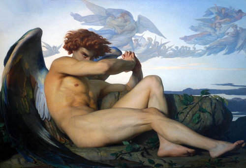

top quality arts curated by "fran hats" for your viewing pleasure
I have collected all the top arts and I will display them here for you. This page will be updated as more top arts are located.
Gaston Casimir Saint-Pierre
Diana the Huntress 19th Century
oil on canvas

Pierre Auguste Cot
Springtime 1873
oil on canvas
Michelangelo
David 1501-1504
marble
photo by Jörg Bittner Unna

Claude Monet
Woman with a Parasol - Madame Monet and Her Son 1875
oil on canvas
Antonio Canova
Psyche Revived by Cupid's Kiss 1787-1793
marble
photo by Jörg Bittner Unna

Alexandre Cabanel
Fallen Angel 1847
oil on canvas
John Everett Millais
Ophelia 1851-1852
oil on canvas